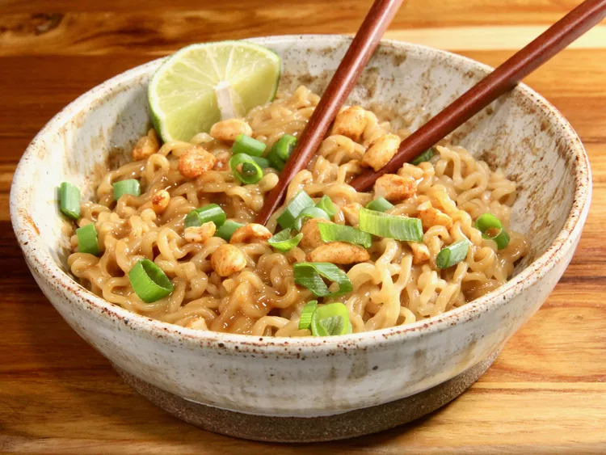

Thai Peanut Butter Ramen

Description
Customize and style up typical ramen noodes with this quick, satisfying meal. Packed with tangy peanut butter flavor
and has a spicy kick.
Ingredients
- Instant Ramen Noodles: 2 packages of noodles, discard seasoning packets.
- Peanut Butter: 1/4 cup creamy peanut butter.
- Soy Sauce: 3 tablespoons reduced-sodium soy sauce.
- Honey: 1 1/2 tablespoons honey.
- Sriracha: 1 tablespoon Sriracha, or to taste.
- Sesame Oil: 2 teaspoons sesame oil.
- Green Onions: 2 green onions, thinly sliced.
- Peanuts: 2 tablespoons chopped peanuts.
- Lime: 1/2 lime, squeezed.
Steps
- Bring a large pot of water to a boil over high heat. Add noodles, and cook to desired doneness, 3-5 minutes.
- Add peanut butter, soy sauce, honey, sriracha, and sesame oil to a large bowl, and whisk until smooth.
- Reserve 1/2 cup pasta water. Drain ramen noodles well, and immediately add them to peanut butter sauce,
add reserved pasta water, 1 tablespoon at a time, to thin.
- Divide into bowl, garnish with green onions, peanuts, and squeezed lime.
Back to Recipes